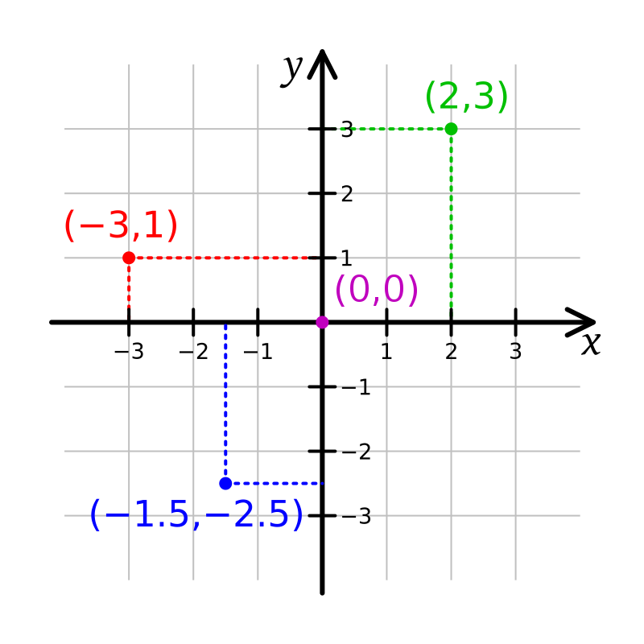

Learning Objectives
After completing this lesson, you'll be able to:
- Distinguish between coordinates stored as numbers and spatial data stored as geometry.
- Explain the value of creating geometry from coordinates.
- Identify the types of data required to create geometry.
- List the three methods of converting coordinates into geometry with FME.
What Is the Difference Between Coordinates and Geometry?
There are many ways to store information about objects' locations. One of the simplest is a coordinate: two numbers that represent a location on a two-dimensional plane.

A Cartesian coordinate system
For spatial data, coordinates are often stored using a geographic coordinate system, where each number in the pair represents the latitude and longitude of a point on the earth, respectively. For example, (49° 10' 48" N, 122° 50' 24" W) or as decimal degrees, (49.18, -122.84).

Latitude and longitude
They can also be stored in a projected coordinate system, where each number represents a location along a two-dimensional axis, similar to the Cartesian plane above.
One of the easiest ways to store coordinates is as numbers in a spreadsheet or table. This format makes them easy to enter and edit.

Example of coordinates stored in a table
However, the data cannot be directly displayed on a map as geometry in this format because it lacks the data structure. These simple numbers cannot be displayed as more complex geometry, such as lines (connecting coordinate locations) or polygons (connecting them into a closed object). You need to create geometry data to display coordinates as points, lines, or polygons.

Learn more about coordinate systems in the Learn Spatial Data Concepts course.
Creating geometry is a prerequisite to spatial data integration and analysis. If you want to take advantage of FME's features, you must turn your coordinates into geometry. Thankfully, it's a simple process!
See the Why Data Integration and Analyze Spatial Data courses to learn about the value of spatial data integration and analysis.
What Methods Are Available?
Converting from CSV or Excel (or other non-spatial data) to point, line, or polygon features (also known as vectors) is easy as long as the data contains spatial data, like latitude and longitude information or addresses.
There are three different methods to create point features using FME:
- Using reader parameters. This method works well if you are working with spatial data from the start. As of FME 2020, this method occurs automatically if the attributes are named correctly, such as latitude, longitude, and elevation, or x, y, and z. It is still possible to use this method in older versions of FME, or if your attribute names are different, it just requires a manual step.
- Using the VertexCreator transformer. This method is useful when spatial data is added later in the workspace or if you are using a transformer that removes geometry.
- Geocoding addresses using the Geocoder transformer. This method is helpful if you do not have coordinates, only addresses. Depending on how many addresses are in your dataset, you may need to run this workspace multiple times over a series of hours/days or pay for a service, as geocoding can be costly.
You will learn how to use all three methods In this course.